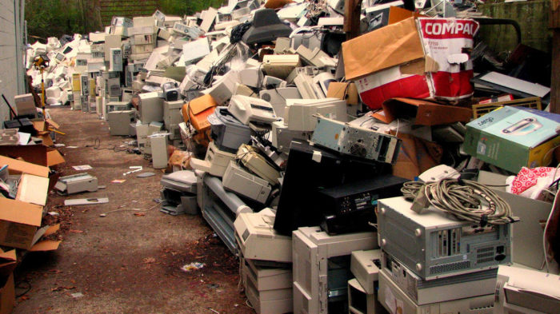
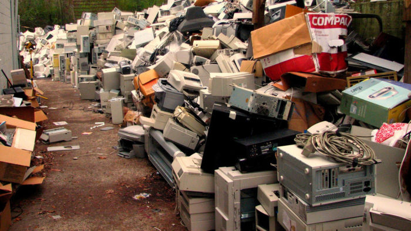

ECOLOG
ECOLOG
Lixo Eletrônico
O que é o lixo eletrônico?
Lixo eletrônico, Resíduos de Equipamentos Elétricos e Eletrônicos (REEE) ou e-lixo são termos utilizados para se referir a todos os equipamentos eletroeletrônicos, suas partes e acessórios que foram descartados por seus proprietários, sem a intenção de reutilizá-los. As tecnologias do mundo moderno possibilitam que novos aparelhos sejam lançados e novas tendências surjam rapidamente no mercado, em um processo planejado que leva o consumidor a substituir seus equipamentos eletrônicos sem necessidade, gerando um volume cada vez maior de lixo eletrônico.
 
Descarte incorreto
Os equipamentos elétricos e eletrônicos possuem diversos componentes tóxicos em suas estruturas. Se descartados de maneira incorreta, esses resíduos tóxicos podem contaminar o solo e os lençóis freáticos, colocando em risco a saúde pública. Segundo o Centro de Tecnologia Mineral (CETEM), cerca de 70% dos metais pesados encontrados em lixões e aterros sanitários controlados são provenientes de equipamentos eletrônicos descartados incorretamente.

Como evitar?
Um estudo do Centro de Ecologia Ann Arbor pesquisou 36 celulares de diferentes marcas e modelos, analisando a quantidade de componentes tóxicos presente nos aparelhos eletrônicos, como chumbo, bromo e cádmio. São elementos que desde sua extração até o
fim da vida útil do produto causam potenciais danos
ao meio ambiente e à saúde humana. Soluções para o descarte de Lixo Eletrônico
1. PROCURE LOCAIS DE DESCARTE;
2.
DEVOLVA AO FABRICANTE;
3. DOE OS ELETRÔNICOS EM BOM ESTADO;
4. DESCARTE NO LIXO CORRETO.